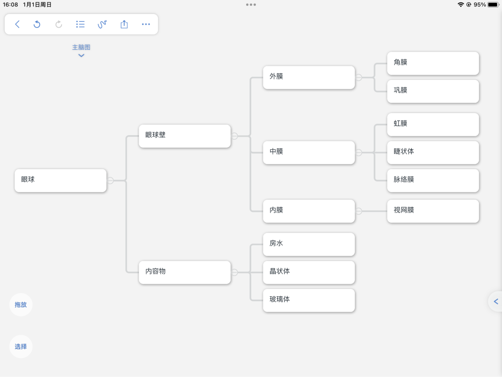

人的眼球近似球状体，由眼球壁和眼球的内容物组成。
眼球的结构及功能、特点（结合生物书图片）
PS：视觉形成的部位---视觉中枢（不要和视网膜混淆）
考点：我们平时常说的“白眼球”和“黑眼球”实际上是指巩膜和虹膜
房水：透明的水样液体，为角膜提供营养物质
过程（总）：光线→角膜→房水→穿过瞳孔→晶状体→玻璃体→视网膜→视神经（传导信息）→视觉中枢
睫状肌舒张，晶状体曲度变小（看得远）；睫状肌收缩，晶状体曲度变大（看的近）。
近视的形成与矫正
成因：眼球前后径过长或晶状体曲度过大且不易恢复原大小导致物象落在视网膜的前方，形成近视
矫正方法：佩戴凹透镜（解决曲度过大）
如何预防近视：生物书P8 83
成因：晶状体曲度过小且不易恢复原大小或眼球前后径过小导致物象落在视网膜后方。
矫正方法：佩戴凸透镜
跳转到下一个文档-人体对外界环境的感知-耳的结构与听觉的形成